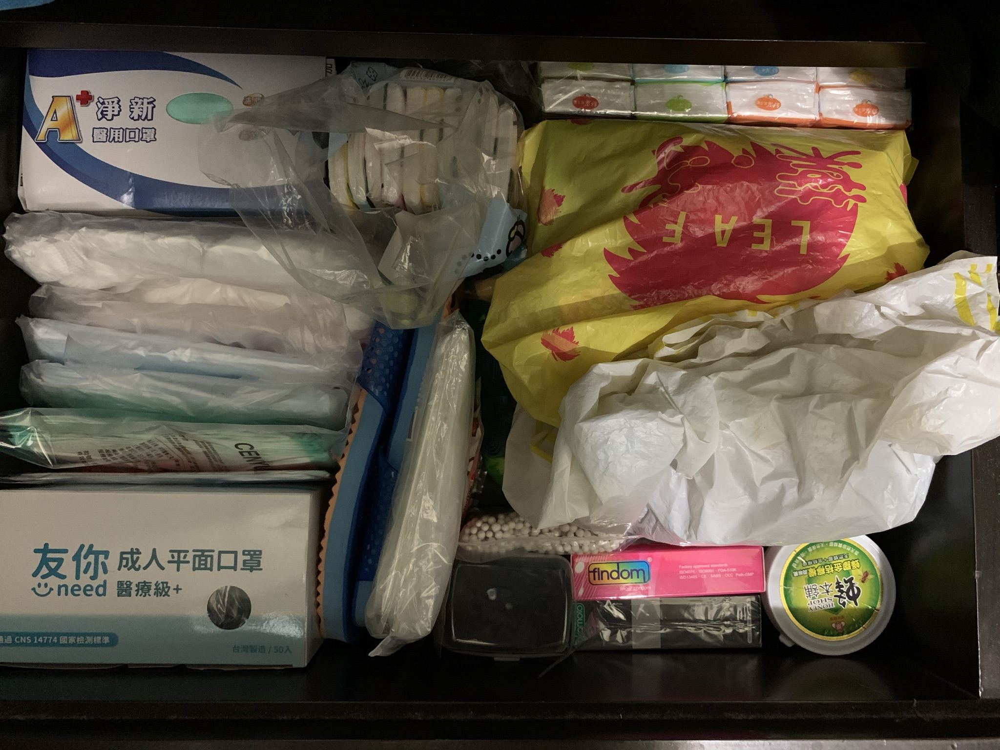

Daily log中有一張從2020年9月加入的卡片, 不知為何, 2021年3月下旬看著卡了很久的卡片, 當時有另一件事遲遲無法推進, 心中一股阿雜感, 3/21禮拜日下午頭就洗下去
事後來看其實是一股衝動和拖延要事的逃避心態XD, 就很像下禮拜要考試了但就是不想念書一直跑去做別的事
我採用的系統和方法
參考<怦然心動的人生整理魔法>, 一位日本人, 名字叫近藤麻理惠所寫的斷捨離書籍, 其實之前就有看過一遍, 但是因為沒有真正實踐, 所以處於輸入後停留在腦海中沒有輸出得到回饋的狀態, 剛好來試試看, 以下簡稱<近藤整理系統>
近藤整理系統核心大概有兩個
- 針對
行為: 丟 => 收納 - 按照
物品類別而非場所類別, 以正確的順序(作者的經驗), 只留下心動的物品, 這件事要一口氣在短時間內徹底完成
根據丟棄的難度加上後續的收納難易度, 順利丟掉東西的基本順序如下: 衣服, 書籍, 文件, 小東西, 紀念品
物品類別
- 衣服(上衣, 下半身, 外套, 襪子類, 內衣類, 包包, 配件, 季節性衣物, 鞋子)
- 書籍
- 文件
- 小東西
- 貴重物品
- 電器3C類
- 生活用具(文具)
- 生活用品(消耗品)(備品)
- 藥品
- 食物(零食)
- 廚房用品和清潔用品
- 其他
- 戶外道具
- 扭蛋和紀念品
- 卡片, 明信片
- 容器
開始動手
分成三階段: 丟 => 收納 => 賣捐丟
丟
先解壓縮, 真的有被嚇到, 原來自己的東西夯不啷噹也是蠻多的, 有些真的已經塵封很久, 如果不是這次行動, 下次看到它不曉得是多久以後了, 不禁心想我真的有好好地使用每個和自己建立關聯的物品並讓它發揮價值嗎? 我真的需要那麼多東西嗎? 我在生活空間中保留那麼多東西的真正原因會是什麼?
決定是否進入丟棄區的判斷原則可以參考機能, 資訊, 感情, 稀有性這四個面向來考慮, 若還能用, 還有用, 還有感覺, 很難取得或難以取代的閾值高於一定程度就可以保留

2015年去大阪買的藥妝, 完全沒拆封使用XD
整理出來要丟掉的東西, 因為過程中忘記拍照, 印象中應該更多
收納
收納一個類別盡量一個區塊, 最多兩個區塊: 常用和不常用
採用的實體方式, 常用的為抽屜, 不常用的為櫃子
包包
- 26吋行李箱
- 雙肩背包, 輕量型雙肩背包(DADA), 側背包
- 運動手提方形包
- 購物袋, 束口袋
- 零錢包
before
after
文件
只分為兩大類, 待辦和保存, 刻意不按文件內容分類, 可以使用的盒子或資料夾最多只有三個
待辦包含現在正在使用, 近期內都會需要文件, 例如: 發票
保存包含需要長時間保管, 例如: 護照, 銀行存摺與印章, 和具有較長時效性(以年為單位)的保單, 產品保證書, 租賃契約…等等
電器3C類
體積較小
- 隨身硬碟, 外接式光碟機
- XBox搖桿
- 數位相機(鏡頭, 電池, 充電組)
- 行動電源, 充電線材, 音源線材, 讀卡機
- 萬國插頭, 行李秤
體積較大
- 電腦, 螢幕, 音箱
- 除濕機, 電風扇, 直立式吸塵器, 體脂計

生活用具
通常指的是工欲善其事必先利其器的東西
文具
- 膠帶類, 信封, 書籤, 貼紙
- 迴紋針, 訂書針, 長尾夾
- 包裝紙, 切割墊
其他
- 電蚊拍, 針線盒
- 小道具包
- 馬克杯, 不鏽鋼碗, 削皮刀
- 眼鏡盒和眼鏡布
生活用品
通常指的是消耗品或備品
- 牙膏, 牙刷, 牙線, 毛巾, 洗面乳, 刮鬍刀
- 口罩
- 暖暖包
- 保險套, 指險套
- 襪子
- 電池
- 衛生紙
- 鞋帶, 羽球握把布

藥品
要注意的是回收藥物的步驟, 不能任意丟棄
- 膠囊
- 藥膏, 藥粉, 眼藥水
- 口內膏
- 腸胃藥(妙利散, 阿德比膠囊, 若元碇)
左邊白色的盒子
食物(零食)
- 茶包
- 麥片
右邊
廚房用品和清潔用品
- 洗衣粉
- 肥皂, 水晶皂
- 沐浴乳, 洗髮乳
- 洗碗精
- 科技海綿, 菜瓜布
- 酒精
- 小蘇打粉, 檸檬酸
- 除塵紙, 垃圾袋
戶外道具
- 野餐墊, 飛盤
- 五月天螢光棒
- 桌遊
扭蛋和紀念品
出國或婚禮
容器
分為保固, 價位, 本體大小
- 包裝盒
- 硬碟外接盒
- 行李秤
- switch盒子
- iphone盒子
- 體脂計
- 除濕機
- 螢幕
- 海報筒
賣捐丟
總結
丟: 大約花費4-5天晚上 (3/21-3/25)
收納: 大約花費3-4天晚上(3/26, 3/28, 3/29)
賣捐丟: 拖延中XD
before
after
過程當中可以設立一個物品中繼站, 目的在於放一些還有機能性但自己用不太到, 準備送出或賣的東西, 此外, 也可以設立容器集中站, 原因是過程中會不斷發現有空盒子出現, 也發現方形容器的好用
容器集中站
常用的東西可以讓它們進入抽屜